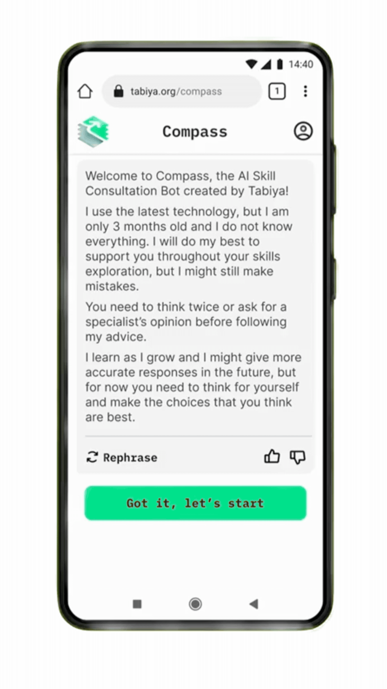
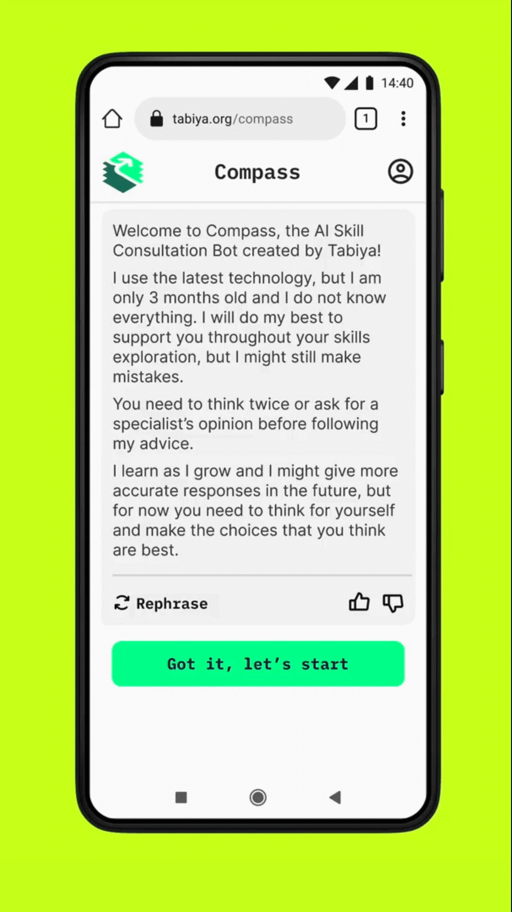
Summary
What I led
Discovery research across five partner organisations and three countries: semi-structured interviews with 25 counsellors and 35 jobseekers, desk research on technology access and phone usage patterns, and stakeholder interviews at senior level across all partner organisations. Synthesised five distinct organisational workflows into a single shared consultation framework. Built a persona set that served three simultaneous functions: product specification for AI agent behaviour, research synthesis across communities, and stakeholder alignment reference. Facilitated a cross-organisational alignment session with Google.org, Oxford, Tabiya engineering, and Harambee — producing a shared vocabulary and prioritised MVP scope. Designed the full MVP: onboarding, a three-phase consultation chatbot flow, and CV generation.
Outcome
Graduated the Google.org Accelerator. MVP adopted and sustained post-accelerator by partner organisations. Tabiya continues to develop Compass as open source. UX roadmap and strategic design guide still in active use.
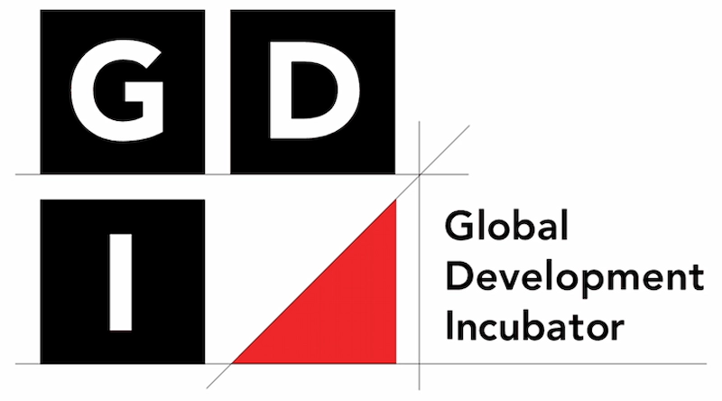
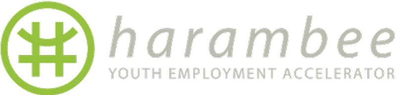
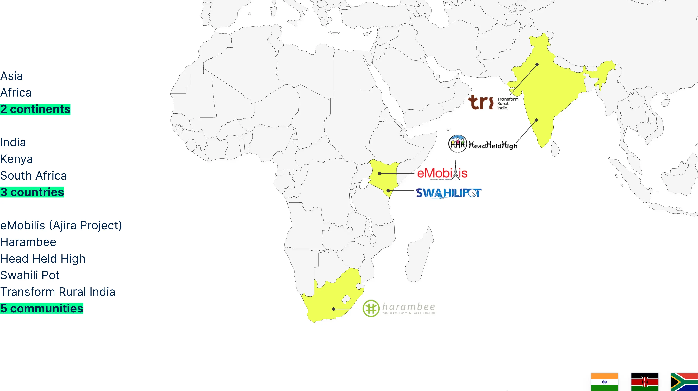
One-designer brief, three continents
Tabiya joined the Google.org Accelerator with a working hypothesis: that an AI chatbot could help young jobseekers surface skills the formal labour market doesn't see — caregiving, informal trade, community organising, unpaid work of every kind — and translate those skills into a CV they could use.
The hypothesis was promising. The conditions weren't simple. I was the only designer on the programme, working with partner organisations across India, Kenya, and South Africa — including Google.org, Oxford University, Harambee, GOYN, and four community-level NGOs serving young people in rural and urban contexts I had never worked in. The MVP had to ship in six months.
When I joined Tabiya I had no experience with any of the three countries, the communities there, or the dense network of counsellors, mentors and intermediaries who do the actual work of getting young people into jobs. Discovery and design had to land fast enough not to hold engineering up.
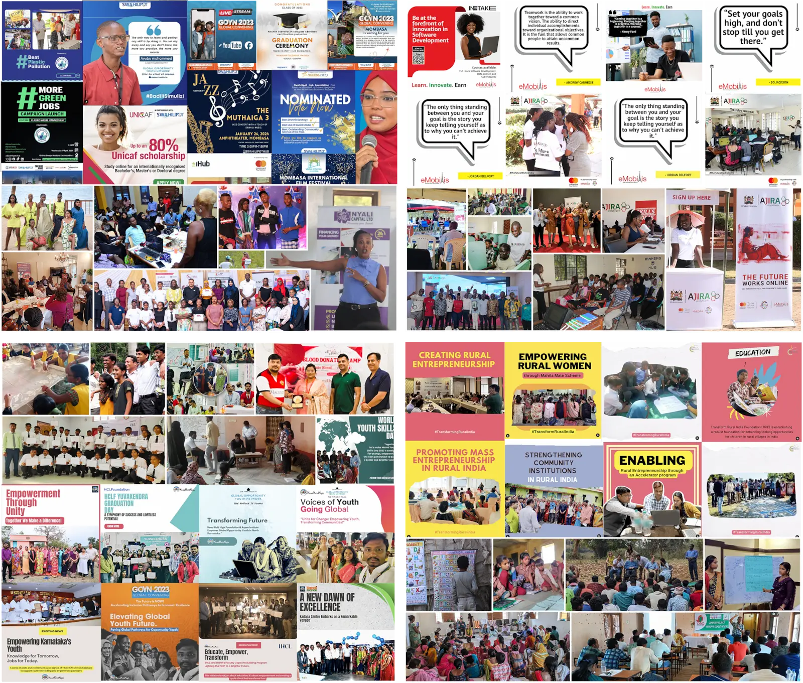
Five distinct workflows mapped into one shared framework
I worked outward from stakeholders into communities. Semi-structured interviews with senior people at each partner organisation — to understand their interventions, their assumptions, and what success looked like from their side — then desk research on technology access, internet coverage, and how young people across the three countries actually use their phones.
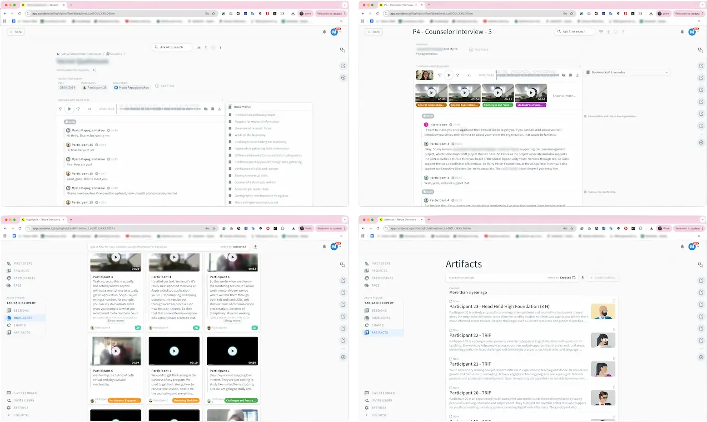
The jobseeker and counsellor interviews used the TED method (Tell, Explain, Describe) to surface narrative detail rather than yes/no answers. With GOYN's and Harambee's recruitment support, I ran interviews with 25 counsellors and 35 jobseekers across Swahilipot Hub Foundation, eMobilis (Ajira Program), Head Held High, and Transform Rural India. For South Africa, I interviewed Harambee SMEs and stakeholders but had no direct access to South African jobseekers. Tumelo and Kabo, the two South African personas, were built by sifting through Harambee's existing personas — they had more than ten — selecting the two that fit Compass's purpose, and modifying them against my SME interviews and desk research. A call made under timeline pressure, not a clean methodology, and I flagged it on stage.
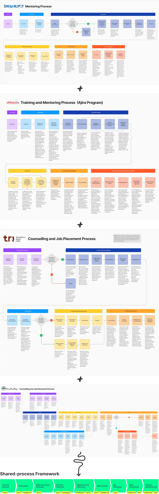
The bigger synthesis challenge was process. Each organisation had its own way of taking a young person from first contact through to job placement. Different steps, different sequencing, different roles for the people involved. The vocabulary mirrored that: counsellors and students at Head Held High and Transform Rural India, trainers and trainees at eMobilis, mentors and mentees at Swahilipot, SMEs and stakeholders at Harambee. Five organisations, five workflows. Before any of the research could speak to product decisions, those workflows had to be mapped out separately and then synthesised onto a common consultation flow the whole programme could reference. So I created the shared process framework Compass was built around.
Another core outcome was a set of personas. They had three jobs from the start: product specifications informing how the AI agent would adapt tone, pacing, and questions across different user contexts; research synthesis across the five communities; and a documented reference for the wider programme. I'd been building them as part of the research synthesis.
The hour that aligned the room
Two months in, I had an hour to present to Google.org leads, Tabiya engineers, Oxford researchers, and Harambee partners. The session had three scopes: a handoff of the research findings, a feedback and approval of the personas, and a first look at the consultation flow and early mockups that would shape the prototype. Three goals, one hour.
The first version of the presentation was the version most researchers default to: country profiles, comparison tables, recurring themes. Kenya's 55 million people. 12.3% youth unemployment. 22 million internet users, 99% on smartphones. Three countries' worth of these. I rehearsed it. It was thorough. It was also going to lose the room. Most of the people in it had never spent time in coastal Mombasa or Pretoria, and most of them were going to make product decisions in the weeks that followed. A data-dense deck would land as information. It wouldn't land as understanding.
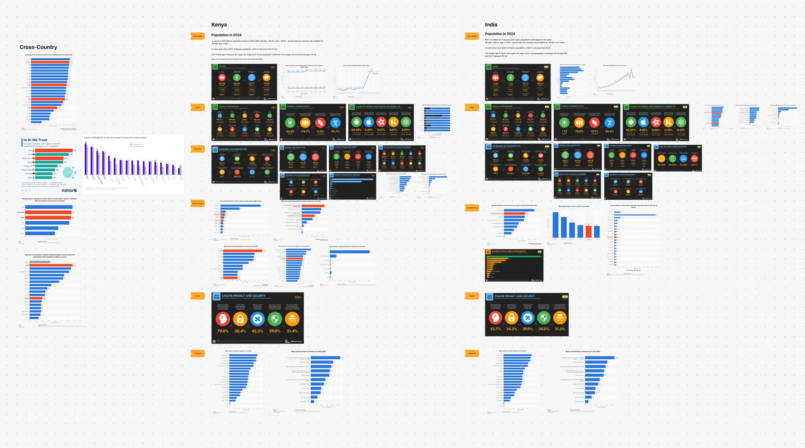
The pivot was small but it was the right one. The personas were already there, already shaped to communicate the texture of the research. I rebuilt the presentation around them. Compass was never going to replace the counsellor relationship. It had to fit inside it. So the personas captured both sides of the consultation, not just the young people. Three jobseekers, two counsellors — five composite characters told as one continuous story: Aisha, a young artist in Mombasa, sole carer for six siblings, looking for work through Swahilipot. Amina, the program manager at Swahilipot who guides her. James, a trainer at eMobilis who Aisha consults about a digital-skills programme. Tumelo, a certified mechanic in Cape Town who has been out of work for years. Kabo, a minimum-wage worker in Pretoria who uses Harambee's job platform every day.
The narrative spine served all three scopes at once. The research findings landed in a form the room could carry into the CUJ and feature prioritisation work that followed. The personas were stretch-tested and approved through the stories that brought them to life. The early designs opened up cross-organisational discussion among stakeholders. The product team left the session able to describe, in their own words, the difference between a Swahilipot counsellor's caseload and a Harambee SME's mandate — and what that meant for how Compass needed to behave. By the end of that hour, all participating organisations had a common understanding and language for Compass.
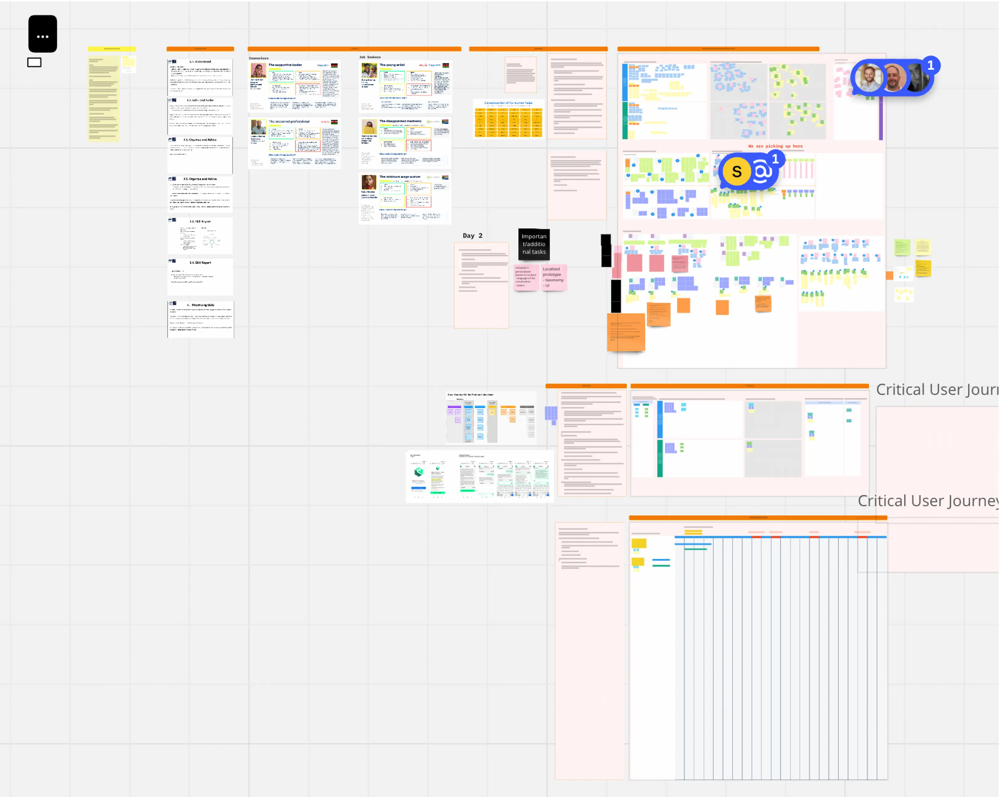
The Accelerator MVP
The design direction was already on the table. What the team still needed to decide was scope: what would actually ship in the six-month accelerator window, and what would wait. The CUJ workshop served this purpose and converged faster than it would have without the persona presentation underneath it. The output was a defined accelerator MVP: onboarding, the consultation chatbot flow, and CV generation — with everything else placed on the wider roadmap.
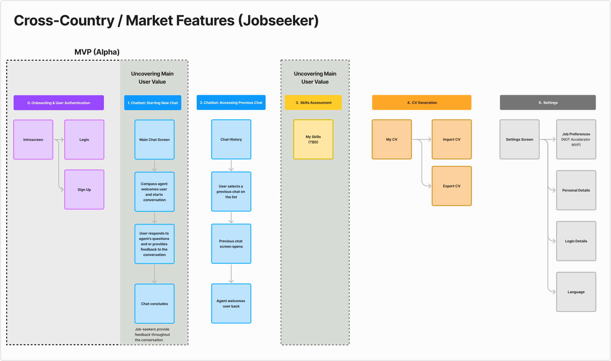
The consultation flow that anchored the MVP was structured in three phases — building rapport, exploring the jobseeker's history, and surfacing skills — adapted across cultural and linguistic contexts in tone, pacing, and prompts.
Accessibility built into the palette,
not bolted on
Compass was built for jobseekers in low-bandwidth contexts, on a wide range of devices, with screen brightness and ambient light conditions outside my Berlin office's range. The visual palette had to hold up across all of that — including for users with colour vision deficiencies.
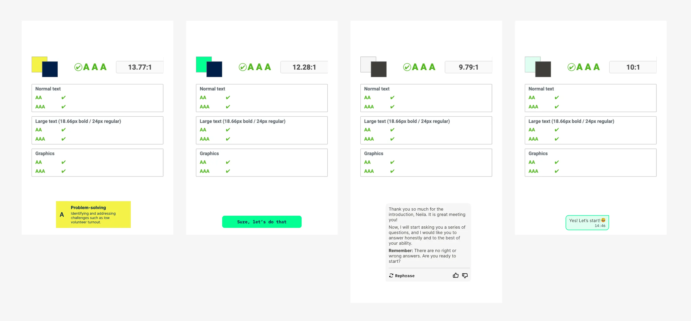
I tested the UI on two axes. WCAG AA contrast checks across every component, which flagged places where contrast ratios fell short and got tightened before launch. And deficiency simulators for anomalous trichromacy, dichromacy, and monochromacy, which revealed that individual colours rendered differently for colour-blind users but the combinations still worked as intended.
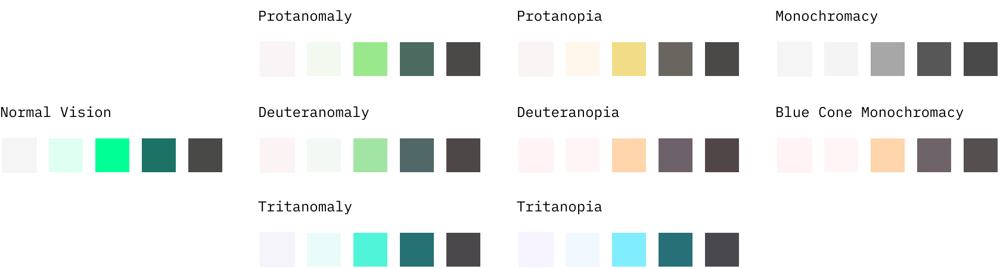
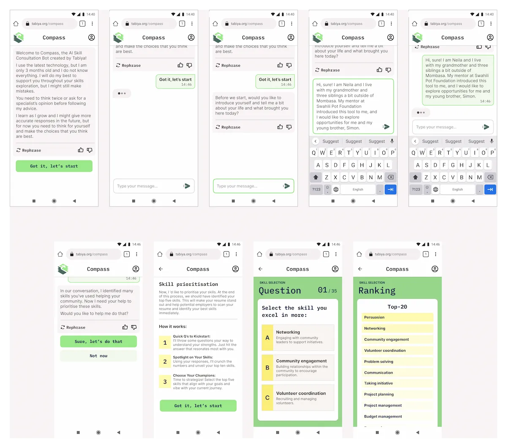
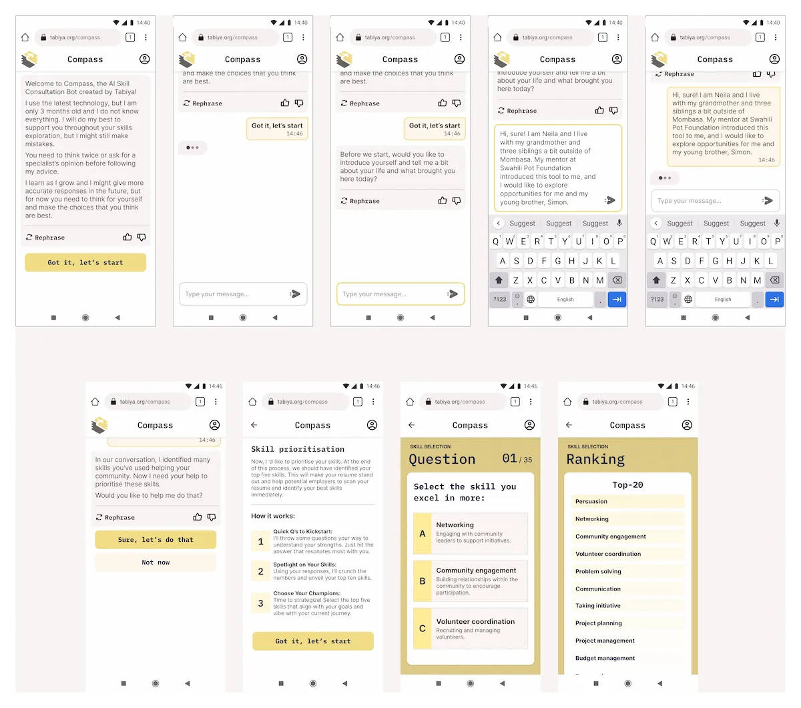
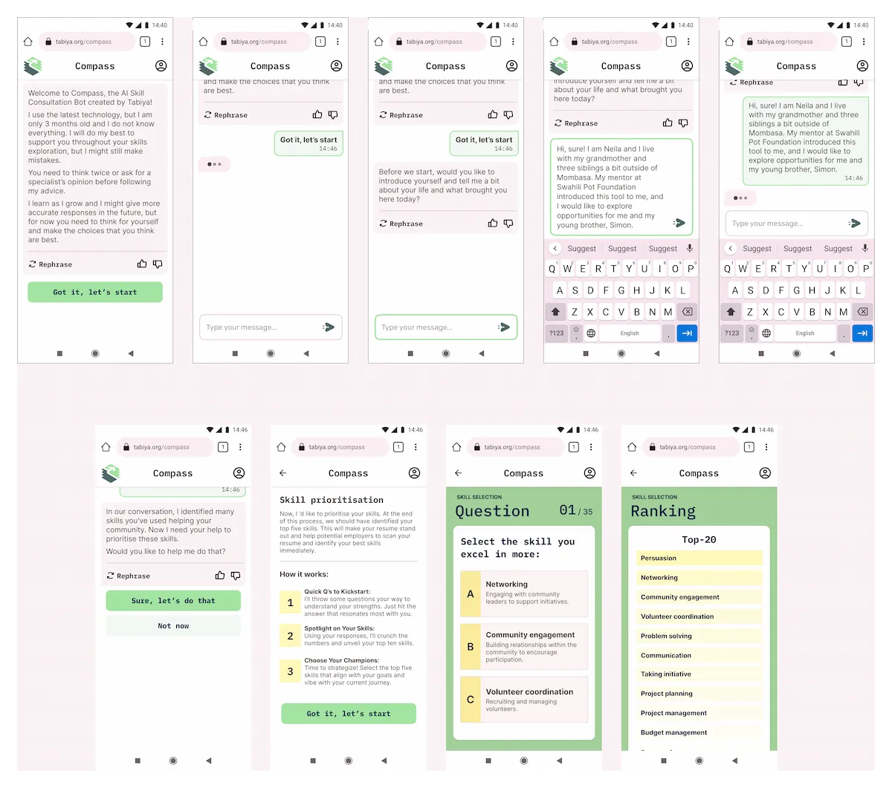
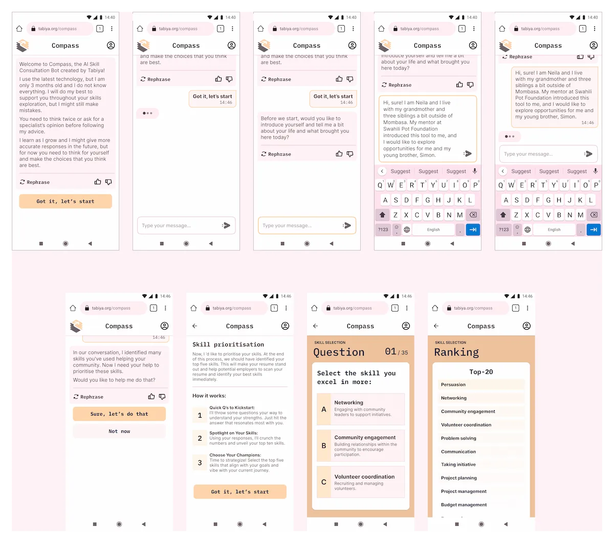
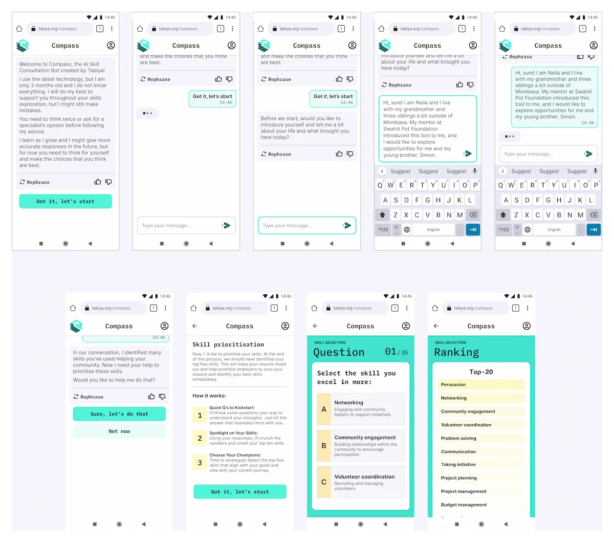
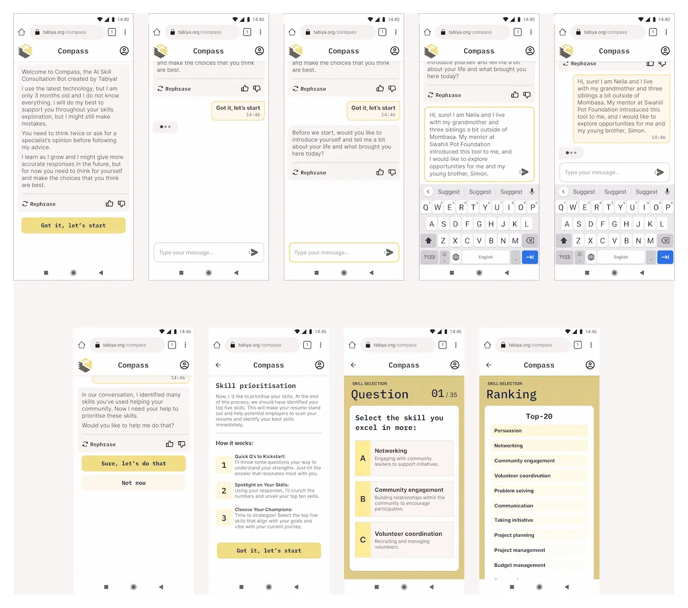
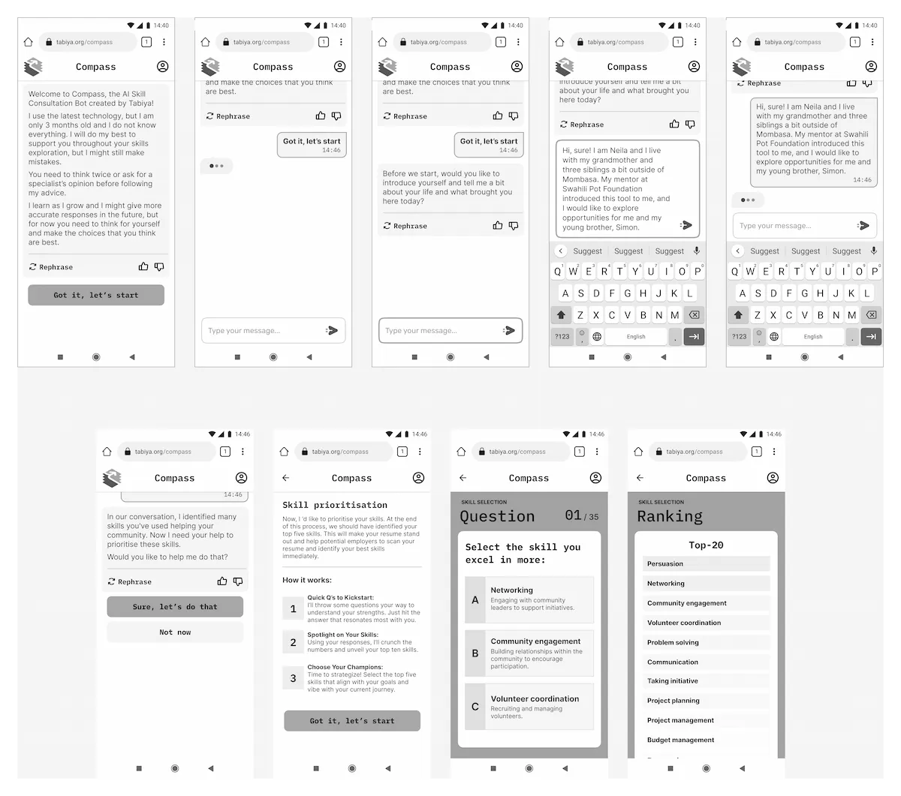
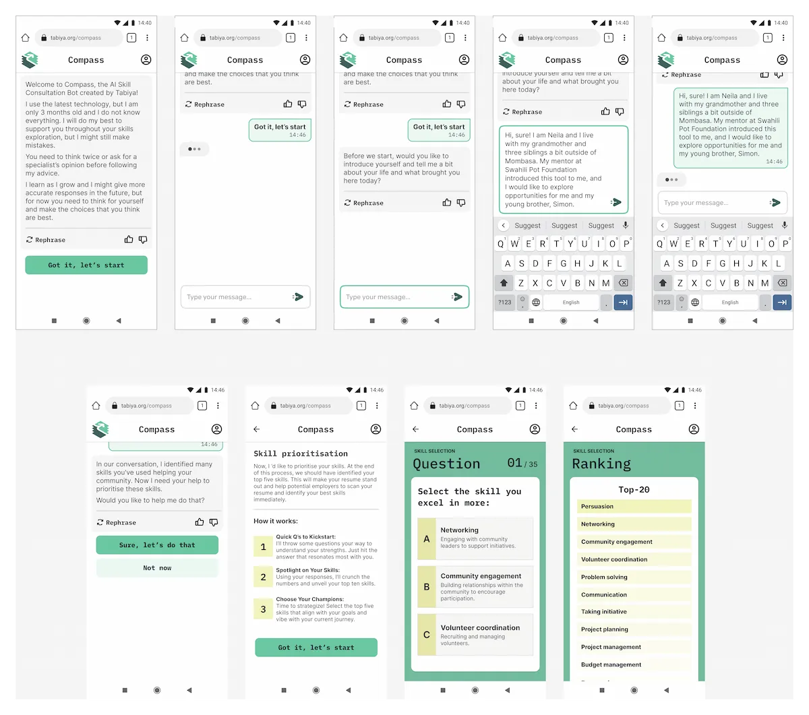
Compass graduated,
and is now open-source
Tabiya graduated from the Google.org Accelerator and the MVP was adopted and sustained post-accelerator by partner organisations. Tabiya continues to develop Compass as open source. The UX roadmap and strategic design guide I produced are still in use for their planning.
Try the prototype →What carried forward
The Tabiya project was humbling, showing me so many things I don't know about life. It also taught me that the hardest part of designing for unfamiliar contexts isn't the research itself — it's translating it into a form that lets people who weren't in the interviews realise the different realities and make good decisions anyway.
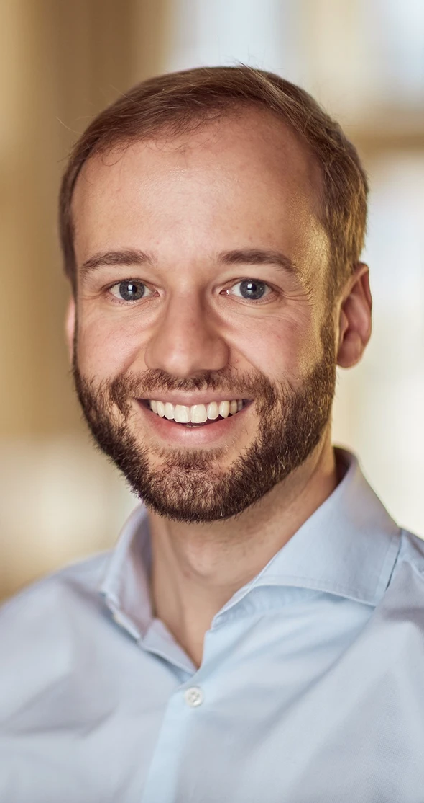